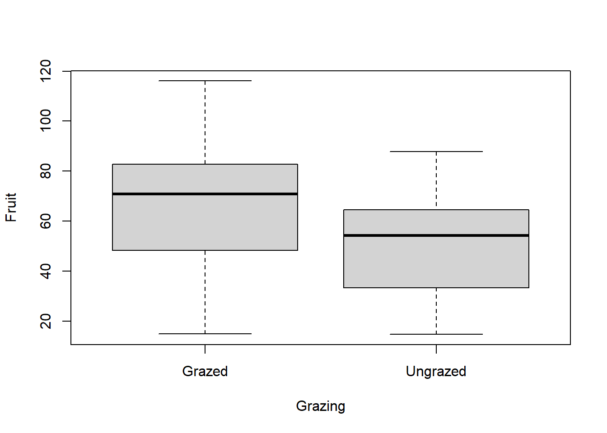
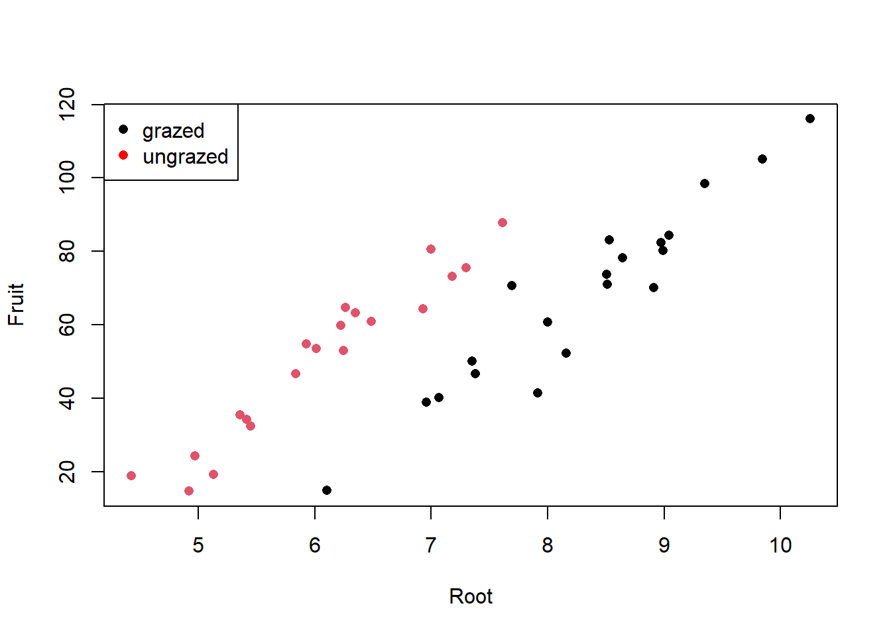
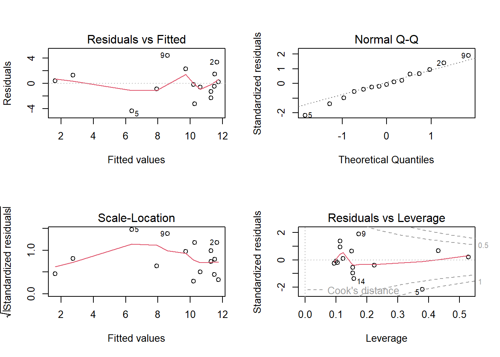
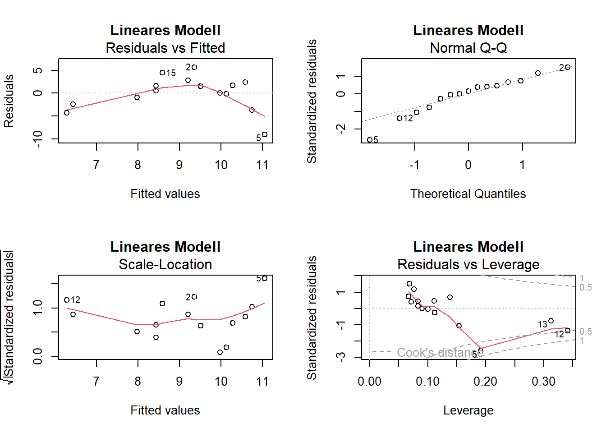

Stat3: Demo
- Demoscript als Download
- Datensatz ipomopsis.csv
- Datensatz loyn.csv
ANCOVA
Experiment zur Fruchtproduktion (“Fruit”) von Ipomopsis sp. (“Fruit”) in Abhängigkeit Ungrazedvon der Beweidung (Grazing mit 2 Levels: Grazed, Ungrazed) und korrigiert für die Pflanzengrösse vor der Beweidung (hier ausgedrückt als Durchmesser an der Spitze des Wurzelstock: “Root”)
compensation <- read.delim("data/ipomopsis.csv", sep = ",", stringsAsFactors = T)summary(compensation) X Root Fruit Grazing
Min. : 1.00 Min. : 4.426 Min. : 14.73 Grazed :20
1st Qu.:10.75 1st Qu.: 6.083 1st Qu.: 41.15 Ungrazed:20
Median :20.50 Median : 7.123 Median : 60.88
Mean :20.50 Mean : 7.181 Mean : 59.41
3rd Qu.:30.25 3rd Qu.: 8.510 3rd Qu.: 76.19
Max. :40.00 Max. :10.253 Max. :116.05 plot(Fruit~Root, data = compensation)
boxplot(Fruit~Grazing, data = compensation)
tapply(compensation$Fruit, compensation$Grazing, mean) Grazed Ungrazed
67.9405 50.8805 aoc.1 <- lm(Fruit~Root * Grazing, data = compensation)
summary.aov(aoc.1) Df Sum Sq Mean Sq F value Pr(>F)
Root 1 16795 16795 359.968 < 2e-16 ***
Grazing 1 5264 5264 112.832 1.21e-12 ***
Root:Grazing 1 5 5 0.103 0.75
Residuals 36 1680 47
---
Signif. codes: 0 '***' 0.001 '**' 0.01 '*' 0.05 '.' 0.1 ' ' 1aoc.2 <- lm(Fruit~Grazing * Root, data = compensation)
summary.aov(aoc.2) Df Sum Sq Mean Sq F value Pr(>F)
Grazing 1 2910 2910 62.380 2.26e-09 ***
Root 1 19149 19149 410.420 < 2e-16 ***
Grazing:Root 1 5 5 0.103 0.75
Residuals 36 1680 47
---
Signif. codes: 0 '***' 0.001 '**' 0.01 '*' 0.05 '.' 0.1 ' ' 1aoc.3 <- lm(Fruit~Grazing + Root, data = compensation)
summary.lm(aoc.3)
Call:
lm(formula = Fruit ~ Grazing + Root, data = compensation)
Residuals:
Min 1Q Median 3Q Max
-17.1920 -2.8224 0.3223 3.9144 17.3290
Coefficients:
Estimate Std. Error t value Pr(>|t|)
(Intercept) -127.829 9.664 -13.23 1.35e-15 ***
GrazingUngrazed 36.103 3.357 10.75 6.11e-13 ***
Root 23.560 1.149 20.51 < 2e-16 ***
---
Signif. codes: 0 '***' 0.001 '**' 0.01 '*' 0.05 '.' 0.1 ' ' 1
Residual standard error: 6.747 on 37 degrees of freedom
Multiple R-squared: 0.9291, Adjusted R-squared: 0.9252
F-statistic: 242.3 on 2 and 37 DF, p-value: < 2.2e-16# Plotten der Ergebnisse
library(tidyverse)
ggplot(compensation, aes(Root, Fruit, color = Grazing)) +
geom_point() + theme_classic()# Ploten mit base R
plot(Fruit~Root, pch = 16, col = Grazing, data = compensation)
legend("topleft", c("grazed", "ungrazed"), col = c("black","red"), pch = 16) 
e <- c(20, 19, 25, 10, 8, 15, 13, 18, 11, 14, 25, 39, 38, 28, 24)
f <- c(12, 15, 10, 7, 2, 10, 12, 11, 13, 10, 9, 2, 4, 7, 13)
lm.1 <- lm(f~e)
lm.quad <- lm(f~e + I(e^2))
summary(lm.1)
Call:
lm(formula = f ~ e)
Residuals:
Min 1Q Median 3Q Max
-9.0549 -1.7015 0.5654 2.0617 5.6406
Coefficients:
Estimate Std. Error t value Pr(>|t|)
(Intercept) 12.2879 2.4472 5.021 0.000234 ***
e -0.1541 0.1092 -1.412 0.181538
---
Signif. codes: 0 '***' 0.001 '**' 0.01 '*' 0.05 '.' 0.1 ' ' 1
Residual standard error: 3.863 on 13 degrees of freedom
Multiple R-squared: 0.1329, Adjusted R-squared: 0.06622
F-statistic: 1.993 on 1 and 13 DF, p-value: 0.1815summary(lm.quad)
Call:
lm(formula = f ~ e + I(e^2))
Residuals:
Min 1Q Median 3Q Max
-4.3866 -1.1018 -0.2027 1.3831 4.4211
Coefficients:
Estimate Std. Error t value Pr(>|t|)
(Intercept) -2.239308 3.811746 -0.587 0.56777
e 1.330933 0.360105 3.696 0.00306 **
I(e^2) -0.031587 0.007504 -4.209 0.00121 **
---
Signif. codes: 0 '***' 0.001 '**' 0.01 '*' 0.05 '.' 0.1 ' ' 1
Residual standard error: 2.555 on 12 degrees of freedom
Multiple R-squared: 0.6499, Adjusted R-squared: 0.5915
F-statistic: 11.14 on 2 and 12 DF, p-value: 0.001842par(mfrow = c(1, 1))
# 1. lineares Modell
plot(f~e, xlim = c(0, 40), ylim = c(0, 20))
abline(lm(f~e), col = "blue")
# 2. quadratisches Modell
xv <- seq(0, 40, 0.1)
plot(f~e, xlim = c(0, 40), ylim = c(0, 20))
yv2 <- predict(lm.quad, list(e = xv))
lines(xv, yv2, col = "red")
# Residualplots
par(mfrow = c(2, 2))
plot(lm.1)
plot(lm.quad)
Multiple lineare Regression
Simulation Overfitting
test <- data.frame("x" = c(1, 2, 3, 4, 5, 6), "y" = c(34, 21, 70, 47, 23, 45))
par(mfrow=c(1,1))
plot(y~x, data = test)
lm.0 <- lm(y~1, data = test)
lm.1 <- lm(y~x, data = test)
lm.2 <- lm(y~x+ I(x^2), data = test)
lm.3 <- lm(y~x+ I(x^2) + I(x^3), data = test)
lm.4 <- lm(y~x+ I(x^2) + I(x^3) + I(x^4), data = test)
lm.5 <- lm(y~x+ I(x^2) + I(x^3) + I(x^4) + I(x^5), data = test)
lm.6 <- lm(y~x+ I(x^2) + I(x^3) + I(x^4) + I(x^5) + I(x^6), data = test)
summary(lm.0)
summary(lm.1)
summary(lm.2)
summary(lm.3)
summary(lm.4)
summary(lm.5)
xv <- seq(from = 0, to = 10, by = 0.1)
plot(y~x, cex = 2, col = "black", lwd = 3, data = test)
yv <- predict(lm.1, list(x = xv))
lines(xv, yv, col = "red", lwd = 3)
yv <- predict(lm.2, list(x = xv))
lines(xv, yv, col = "blue", lwd = 3)
yv<-predict(lm.3, list(x = xv))
lines(xv, yv, col = "green", lwd =3)
yv <- predict(lm.4, list(x = xv))
lines(xv, yv, col = "orange", lwd = 3)
yv <- predict(lm.5, list(x = xv))
lines(xv, yv, col = "black", lwd = 3)Multiple lineare Regression basierend auf Logan, Beispiel 9A
loyn <- read.delim("data/loyn.csv", sep = ",")
summary(loyn) X ABUND AREA YR.ISOL
Min. : 1.00 Min. : 1.50 Min. : 0.10 Min. :1890
1st Qu.:14.75 1st Qu.:12.40 1st Qu.: 2.00 1st Qu.:1928
Median :28.50 Median :21.05 Median : 7.50 Median :1962
Mean :28.50 Mean :19.51 Mean : 69.27 Mean :1950
3rd Qu.:42.25 3rd Qu.:28.30 3rd Qu.: 29.75 3rd Qu.:1966
Max. :56.00 Max. :39.60 Max. :1771.00 Max. :1976
DIST LDIST GRAZE ALT
Min. : 26.0 Min. : 26.0 Min. :1.000 Min. : 60.0
1st Qu.: 93.0 1st Qu.: 158.2 1st Qu.:2.000 1st Qu.:120.0
Median : 234.0 Median : 338.5 Median :3.000 Median :140.0
Mean : 240.4 Mean : 733.3 Mean :2.982 Mean :146.2
3rd Qu.: 333.2 3rd Qu.: 913.8 3rd Qu.:4.000 3rd Qu.:182.5
Max. :1427.0 Max. :4426.0 Max. :5.000 Max. :260.0 Korrelation zwischen den Prädiktoren
cor <- cor(loyn[, 2:7])
print(cor, digits = 2) ABUND AREA YR.ISOL DIST LDIST GRAZE
ABUND 1.000 0.2560 0.5034 0.24 0.087 -0.683
AREA 0.256 1.0000 -0.0015 0.11 0.035 -0.310
YR.ISOL 0.503 -0.0015 1.0000 0.11 -0.083 -0.636
DIST 0.236 0.1083 0.1132 1.00 0.317 -0.256
LDIST 0.087 0.0346 -0.0833 0.32 1.000 -0.028
GRAZE -0.683 -0.3104 -0.6356 -0.26 -0.028 1.000cor[abs(cor)<0.6] <- 0
cor ABUND AREA YR.ISOL DIST LDIST GRAZE
ABUND 1.0000000 0 0.0000000 0 0 -0.6825114
AREA 0.0000000 1 0.0000000 0 0 0.0000000
YR.ISOL 0.0000000 0 1.0000000 0 0 -0.6355671
DIST 0.0000000 0 0.0000000 1 0 0.0000000
LDIST 0.0000000 0 0.0000000 0 1 0.0000000
GRAZE -0.6825114 0 -0.6355671 0 0 1.0000000print(cor, digits = 3) ABUND AREA YR.ISOL DIST LDIST GRAZE
ABUND 1.000 0 0.000 0 0 -0.683
AREA 0.000 1 0.000 0 0 0.000
YR.ISOL 0.000 0 1.000 0 0 -0.636
DIST 0.000 0 0.000 1 0 0.000
LDIST 0.000 0 0.000 0 1 0.000
GRAZE -0.683 0 -0.636 0 0 1.000lm.1 <- lm (ABUND ~ YR.ISOL + ALT + GRAZE, data = loyn)
if(!require(car)){install.packages("car")}
library(car)
vif(lm.1) YR.ISOL ALT GRAZE
1.679995 1.200372 1.904799 influence.measures(lm.1)Influence measures of
lm(formula = ABUND ~ YR.ISOL + ALT + GRAZE, data = loyn) :
dfb.1_ dfb.YR.I dfb.ALT dfb.GRAZ dffit cov.r cook.d hat inf
1 0.128900 -0.136701 -2.25e-02 8.68e-02 -0.455383 0.663 4.64e-02 0.0286 *
2 -0.046388 0.041396 1.50e-01 -2.15e-02 -0.222873 1.159 1.26e-02 0.0996
3 -0.178685 0.184085 -5.40e-02 -4.08e-02 -0.298379 1.108 2.23e-02 0.0901
4 0.054207 -0.053864 -2.43e-02 -4.06e-02 -0.085906 1.099 1.87e-03 0.0331
5 0.032249 -0.035235 3.34e-02 6.56e-02 0.138294 1.123 4.85e-03 0.0597
6 0.072550 -0.075381 3.68e-02 -3.40e-02 -0.129304 1.072 4.22e-03 0.0315
7 0.153153 -0.155477 8.56e-02 -1.78e-01 -0.263831 1.139 1.75e-02 0.0978
8 -0.044533 0.039741 1.44e-01 -2.07e-02 -0.213965 1.162 1.16e-02 0.0996
9 0.305330 -0.305810 1.16e-02 -2.93e-01 -0.412610 0.935 4.12e-02 0.0593
10 -0.134119 0.136978 -1.50e-02 -2.15e-02 -0.217402 1.140 1.19e-02 0.0876
11 0.145761 -0.154644 2.14e-01 -2.21e-02 0.300565 1.103 2.26e-02 0.0883
12 -0.246939 0.255702 -1.22e-01 -2.33e-02 -0.369735 1.161 3.42e-02 0.1318
13 0.071832 -0.068266 -1.34e-01 -3.53e-02 -0.191283 1.110 9.23e-03 0.0653
14 0.019281 -0.016626 -3.08e-01 1.90e-01 -0.597735 0.810 8.32e-02 0.0692
15 0.000311 -0.000315 -2.26e-05 2.96e-05 0.000496 1.184 6.27e-08 0.0874
16 -0.131537 0.136111 -5.26e-02 -3.46e-02 -0.223973 1.146 1.27e-02 0.0923
17 -0.098856 0.108184 -1.60e-01 1.44e-02 0.266285 0.984 1.75e-02 0.0393
18 0.238014 -0.243468 3.85e-02 -1.36e-01 -0.397451 0.753 3.65e-02 0.0293 *
19 -0.031350 0.029292 5.78e-02 3.66e-02 0.081711 1.121 1.70e-03 0.0460
20 -0.024122 0.019709 7.59e-02 5.75e-02 -0.093805 1.170 2.24e-03 0.0829
21 0.036050 -0.033748 -7.79e-02 -2.15e-02 -0.102357 1.162 2.66e-03 0.0786
22 -0.015768 0.016959 4.26e-03 -6.28e-02 -0.127636 1.116 4.13e-03 0.0531
23 0.050368 -0.052333 2.55e-02 -2.36e-02 -0.089769 1.095 2.04e-03 0.0315
24 -0.012264 0.008841 5.20e-02 5.07e-02 -0.071851 1.209 1.31e-03 0.1091
25 0.145637 -0.146703 2.41e-02 -7.94e-02 0.157322 1.319 6.30e-03 0.1876 *
26 -0.007372 0.007451 1.67e-03 5.11e-03 0.015793 1.106 6.36e-05 0.0232
27 0.043873 -0.045585 2.22e-02 -2.05e-02 -0.078194 1.100 1.55e-03 0.0315
28 -0.018037 0.016743 2.82e-02 2.63e-02 0.036688 1.224 3.43e-04 0.1175
29 -0.131935 0.133012 -2.20e-02 1.11e-01 0.164334 1.152 6.84e-03 0.0836
30 0.094249 -0.092478 -8.47e-02 1.81e-02 0.210983 1.127 1.12e-02 0.0790
31 0.118899 -0.130120 1.93e-01 -1.73e-02 -0.320276 0.928 2.49e-02 0.0393
32 -0.103130 0.098781 9.40e-02 1.33e-01 0.170699 1.126 7.37e-03 0.0690
33 -0.284839 0.290760 -1.33e-01 2.50e-01 0.433995 0.919 4.54e-02 0.0602
34 -0.213008 0.199453 2.95e-01 3.01e-01 0.408017 1.071 4.12e-02 0.1008
35 0.068874 -0.066760 -1.35e-01 -3.57e-03 -0.246916 1.008 1.51e-02 0.0407
36 -0.151383 0.159324 -1.23e-01 5.71e-02 0.283014 0.959 1.96e-02 0.0376
37 0.022901 -0.022520 -3.21e-02 3.25e-02 0.103312 1.136 2.71e-03 0.0605
38 -0.001488 0.001427 3.83e-03 -1.89e-04 0.006929 1.125 1.22e-05 0.0393
39 -0.299662 0.296262 7.86e-02 2.86e-01 0.365529 1.060 3.31e-02 0.0860
40 0.045779 -0.044212 -7.15e-02 3.70e-02 0.168859 1.126 7.21e-03 0.0685
41 -0.043463 0.037744 6.26e-02 1.22e-01 -0.153196 1.126 5.94e-03 0.0653
42 -0.067499 0.070133 -3.42e-02 3.16e-02 0.120302 1.078 3.66e-03 0.0315
43 0.002552 -0.002850 -1.05e-02 1.52e-02 -0.036428 1.143 3.38e-04 0.0558
44 0.011473 -0.009053 -3.51e-02 -3.92e-02 0.052676 1.192 7.07e-04 0.0953
45 0.002848 0.003165 -8.61e-02 -6.95e-02 0.137899 1.092 4.81e-03 0.0427
46 -0.116776 0.109111 2.15e-01 1.36e-01 0.304366 0.977 2.28e-02 0.0460
47 0.445830 -0.431209 -2.69e-01 -3.41e-01 0.629701 0.642 8.76e-02 0.0483 *
48 -0.000133 0.004718 4.46e-02 -1.58e-01 0.302736 1.002 2.26e-02 0.0520
49 0.008724 -0.006876 -2.00e-02 -3.60e-02 0.048292 1.150 5.94e-04 0.0626
50 0.019369 -0.017688 -5.80e-03 -5.14e-02 0.069197 1.136 1.22e-03 0.0548
51 -0.122055 0.122805 7.02e-02 2.13e-02 0.231107 1.022 1.33e-02 0.0408
52 0.020580 -0.015671 -8.25e-02 -6.78e-02 0.099679 1.298 2.53e-03 0.1704 *
53 0.014674 -0.013095 -8.87e-03 -4.28e-02 0.057249 1.139 8.35e-04 0.0549
54 0.138452 -0.137403 3.82e-02 -1.54e-01 0.204365 1.168 1.06e-02 0.1011
55 -0.000650 0.000535 -4.05e-03 6.97e-03 -0.014242 1.144 5.17e-05 0.0555
56 0.021139 -0.021938 2.56e-02 -1.62e-02 0.039541 1.363 3.98e-04 0.2077 *Modellvereinfachung
lm.1 <- lm(ABUND ~ YR.ISOL + ALT + GRAZE, data = loyn)
summary(lm.1)
Call:
lm(formula = ABUND ~ YR.ISOL + ALT + GRAZE, data = loyn)
Residuals:
Min 1Q Median 3Q Max
-19.5498 -4.8951 0.6504 4.7798 20.2384
Coefficients:
Estimate Std. Error t value Pr(>|t|)
(Intercept) -73.58185 107.24995 -0.686 0.495712
YR.ISOL 0.05143 0.05393 0.954 0.344719
ALT 0.03285 0.02679 1.226 0.225618
GRAZE -4.01692 0.99881 -4.022 0.000188 ***
---
Signif. codes: 0 '***' 0.001 '**' 0.01 '*' 0.05 '.' 0.1 ' ' 1
Residual standard error: 7.894 on 52 degrees of freedom
Multiple R-squared: 0.4887, Adjusted R-squared: 0.4592
F-statistic: 16.57 on 3 and 52 DF, p-value: 1.106e-07lm.2 <- update(lm.1,~.-YR.ISOL)
anova(lm.1, lm.2)Analysis of Variance Table
Model 1: ABUND ~ YR.ISOL + ALT + GRAZE
Model 2: ABUND ~ ALT + GRAZE
Res.Df RSS Df Sum of Sq F Pr(>F)
1 52 3240.4
2 53 3297.1 -1 -56.662 0.9093 0.3447summary(lm.2)
Call:
lm(formula = ABUND ~ ALT + GRAZE, data = loyn)
Residuals:
Min 1Q Median 3Q Max
-19.1677 -4.8261 0.0266 4.6944 19.1054
Coefficients:
Estimate Std. Error t value Pr(>|t|)
(Intercept) 28.55582 5.43245 5.257 2.67e-06 ***
ALT 0.03191 0.02675 1.193 0.238
GRAZE -4.59679 0.79167 -5.806 3.67e-07 ***
---
Signif. codes: 0 '***' 0.001 '**' 0.01 '*' 0.05 '.' 0.1 ' ' 1
Residual standard error: 7.887 on 53 degrees of freedom
Multiple R-squared: 0.4798, Adjusted R-squared: 0.4602
F-statistic: 24.44 on 2 and 53 DF, p-value: 3.011e-08lm.3 <- update(lm.2,~.-ALT)
anova(lm.2, lm.3)Analysis of Variance Table
Model 1: ABUND ~ ALT + GRAZE
Model 2: ABUND ~ GRAZE
Res.Df RSS Df Sum of Sq F Pr(>F)
1 53 3297.1
2 54 3385.6 -1 -88.519 1.4229 0.2382summary(lm.3)
Call:
lm(formula = ABUND ~ GRAZE, data = loyn)
Residuals:
Min 1Q Median 3Q Max
-19.1066 -5.4097 0.0934 4.4856 18.2747
Coefficients:
Estimate Std. Error t value Pr(>|t|)
(Intercept) 34.3692 2.4095 14.264 < 2e-16 ***
GRAZE -4.9813 0.7259 -6.862 6.9e-09 ***
---
Signif. codes: 0 '***' 0.001 '**' 0.01 '*' 0.05 '.' 0.1 ' ' 1
Residual standard error: 7.918 on 54 degrees of freedom
Multiple R-squared: 0.4658, Adjusted R-squared: 0.4559
F-statistic: 47.09 on 1 and 54 DF, p-value: 6.897e-09par(mfrow = c(2, 2))
plot(lm.1)
Hierarchical partitioning
if(!require(hier.part)){install.packages("hier.part")}
library(hier.part)
loyn.preds <-with(loyn, data.frame(YR.ISOL, ALT, GRAZE))
hier.part(loyn$ABUND, loyn.preds, gof = "Rsqu")
$gfs
[1] 0.0000000 0.2533690 0.1488696 0.4658218 0.3297010 0.4739432 0.4797883
[8] 0.4887284
$IJ
I J Total
YR.ISOL 0.11892853 0.13444049 0.2533690
ALT 0.06960132 0.07926823 0.1488696
GRAZE 0.30019854 0.16562324 0.4658218
$I.perc
ind.exp.var
YR.ISOL 24.33428
ALT 14.24131
GRAZE 61.42441
$params
$params$full.model
[1] "y ~ YR.ISOL + ALT + GRAZE"
$params$family
[1] "gaussian"
$params$link
[1] "default"
$params$gof
[1] "Rsqu"Partial regressions
avPlots(lm.1, ask = F)
Multimodel inference
if(!require(MuMIn)){install.packages("MuMIn")}
library(MuMIn)
global.model <- lm(ABUND ~ YR.ISOL + ALT + GRAZE, data = loyn)
options(na.action = "na.fail")
allmodels <- dredge(global.model)
allmodelsGlobal model call: lm(formula = ABUND ~ YR.ISOL + ALT + GRAZE, data = loyn)
---
Model selection table
(Int) ALT GRA YR.ISO df logLik AICc delta weight
3 34.370 -4.981 3 -194.315 395.1 0.00 0.407
4 28.560 0.03191 -4.597 4 -193.573 395.9 0.84 0.267
7 -62.750 -4.440 0.04898 4 -193.886 396.6 1.46 0.196
8 -73.580 0.03285 -4.017 0.05143 5 -193.087 397.4 2.28 0.130
6 -348.500 0.07006 0.18350 4 -200.670 410.1 15.03 0.000
5 -392.300 0.21120 3 -203.690 413.8 18.75 0.000
2 5.598 0.09515 3 -207.358 421.2 26.09 0.000
1 19.510 2 -211.871 428.0 32.88 0.000
Models ranked by AICc(x) sw(allmodels) GRAZE ALT YR.ISOL
Sum of weights: 1.00 0.40 0.33
N containing models: 4 4 4 avgmodel <- model.avg(allmodels, subset = TRUE)
summary(avgmodel)
Call:
model.avg(object = allmodels, subset = TRUE)
Component model call:
lm(formula = ABUND ~ <8 unique rhs>, data = loyn)
Component models:
df logLik AICc delta weight
2 3 -194.31 395.09 0.00 0.41
12 4 -193.57 395.93 0.84 0.27
23 4 -193.89 396.56 1.46 0.20
123 5 -193.09 397.37 2.28 0.13
13 4 -200.67 410.13 15.03 0.00
3 3 -203.69 413.84 18.75 0.00
1 3 -207.36 421.18 26.09 0.00
(Null) 2 -211.87 427.97 32.88 0.00
Term codes:
ALT GRAZE YR.ISOL
1 2 3
Model-averaged coefficients:
(full average)
Estimate Std. Error Adjusted SE z value Pr(>|z|)
(Intercept) -0.29874 77.23966 78.39113 0.004 0.997
GRAZE -4.64605 0.89257 0.91048 5.103 3e-07 ***
ALT 0.01282 0.02311 0.02340 0.548 0.584
YR.ISOL 0.01631 0.03883 0.03941 0.414 0.679
(conditional average)
Estimate Std. Error Adjusted SE z value Pr(>|z|)
(Intercept) -0.29874 77.23966 78.39113 0.004 0.997
GRAZE -4.64724 0.88957 0.90755 5.121 3e-07 ***
ALT 0.03224 0.02678 0.02741 1.176 0.240
YR.ISOL 0.05007 0.05421 0.05548 0.902 0.367
---
Signif. codes: 0 '***' 0.001 '**' 0.01 '*' 0.05 '.' 0.1 ' ' 1